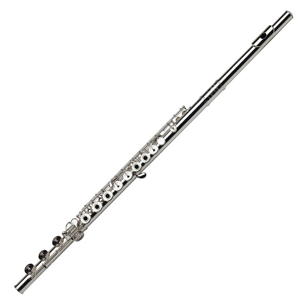
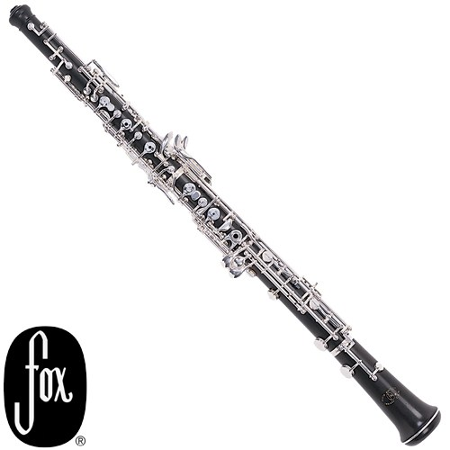
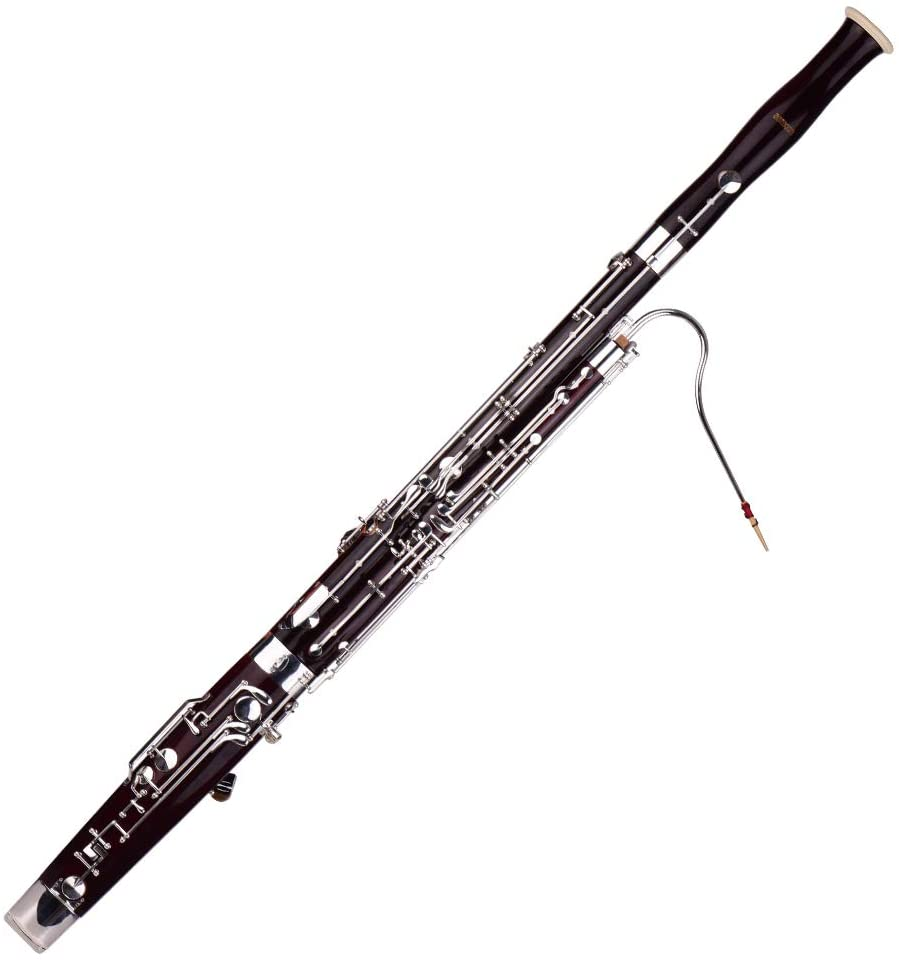
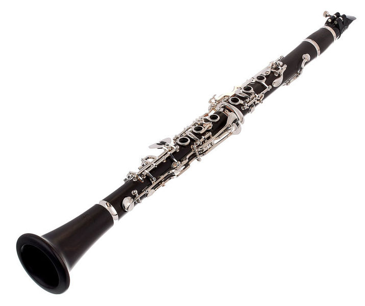
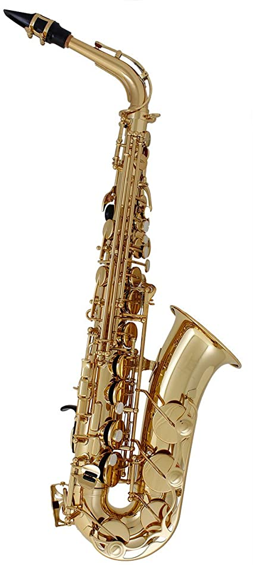

- 
- 
- 
- 
- 
Flute - The flute is a family of musical instruments in the woodwind group. Unlike other woodwinds, it doe not use reeds to make sound. |
Oboe - The oboe is a member of the double reed family. This means that pieces of cane vibrate together to make sound. |
Bassoon - The bassoo is also a member of the double reed family. This is the only wood wind instrument that conventionally reads Bass Clef. |
Clarinet - The clarinet, also known as the best instrument, has the largest playing range of all of the woodwinds. |
Saxophone - The saxophone is the most recent addition to the woodwind family. Like the clarinet, it is a single reed instrument. But it has a metal body like the flute. This instrument is very common in popular music. |